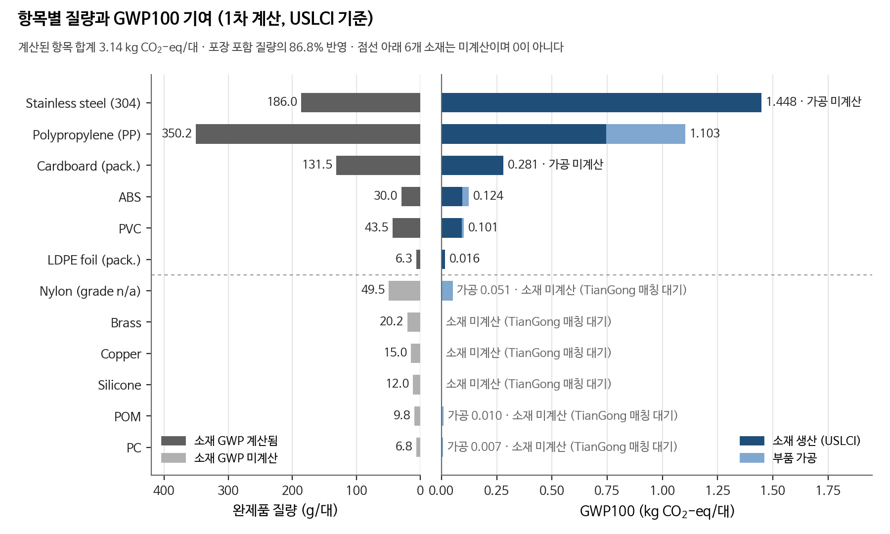
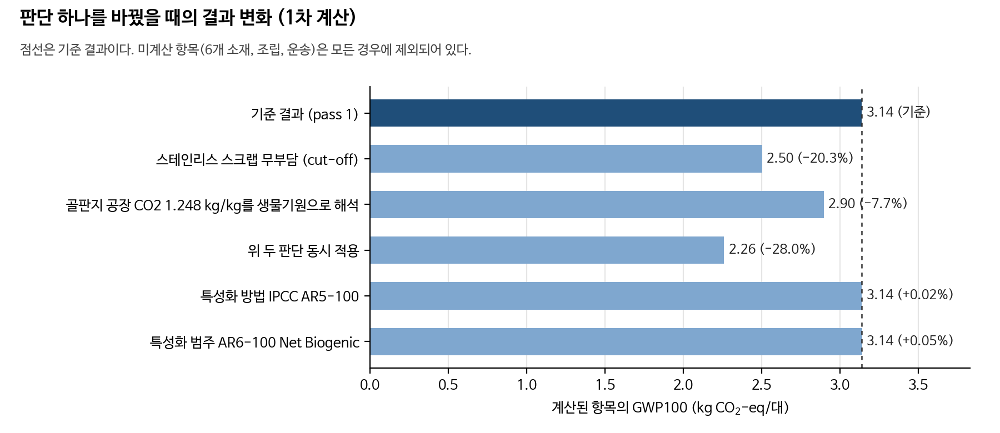
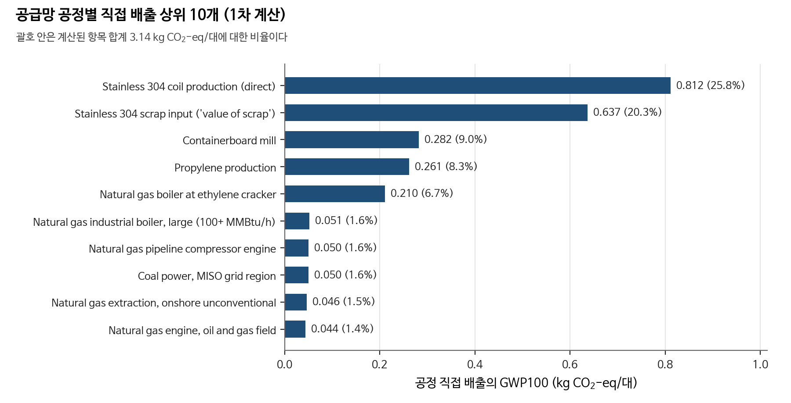
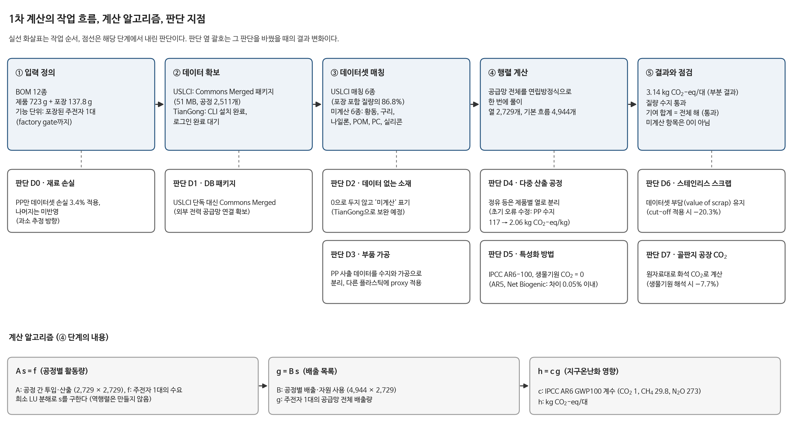

2차 계산(pass 2), 부분 결과 · 2026-10-08 · 저장소 01willy/kettle-lca
주전자 1대를 공장 출하 시점까지 만드는 동안 공급망 전체에서 배출되는 온실가스를 IPCC AR6 GWP100으로 환산한 값이다. 데이터가 없는 4개 소재와 금속 성형, 조립 전력, 원료 운송이 빠져 있으므로 실제 총량은 이보다 크다. 미계산 항목은 0으로 처리하지 않았다.
| 항목 | 소재 | 가공 | 합계 (kg CO2-eq/대) | 비율 | 데이터 |
|---|---|---|---|---|---|
| Stainless steel | 1.448 | 0.000 | 1.448 | 44.3% | USLCI |
| Polypropylene (PP) | 0.745 | 0.358 | 1.103 | 33.7% | USLCI |
| Cardboard packaging | 0.281 | 0.000 | 0.281 | 8.6% | USLCI |
| Acrylonitrile-butadiene-styrene (ABS) | 0.094 | 0.031 | 0.124 | 3.8% | USLCI |
| Polyvinyl chloride (PVC) | 0.092 | 0.009 | 0.101 | 3.1% | USLCI |
| Copper | 0.064 | 0.000 | 0.064 | 2.0% | TianGong |
| Brass | 0.064 | 0.000 | 0.064 | 2.0% | TianGong |
| Nylon, grade unspecified | 0.000 | 0.051 | 0.051 | 1.5% | USLCI |
| LDPE packaging foil | 0.015 | 0.001 | 0.016 | 0.5% | USLCI |
| Polyoxymethylene (POM) | 0.000 | 0.010 | 0.010 | 0.3% | USLCI |
| Polycarbonate (PC) | 0.000 | 0.007 | 0.007 | 0.2% | USLCI |
| 나일론, POM, PC, 실리콘 (소재) | 미계산 (두 DB에 해당 데이터셋 없음) | ||||

그림은 1차 계산(USLCI) 기준이다. 구리 0.064 kg, 황동 0.064 kg은 위 표에 반영되어 있다.
| 데이터 | 값 | 비고 |
|---|---|---|
| 구리 (primary copper production, CN 2019) | 4.30 kg CO2-eq/kg | CO2 3.95, CH4 0.0075, N2O 0.00046 kg/kg |
| 중국 전력 (electricity mix, CN 2022) | 0.568 kg CO2/kWh | CO2만 기록됨 |
| 황동 H62 판재 (CN-JX 2023) | 3.18 kg CO2-eq/kg | 구리 0.56 kg/kg, 전력 1.25 kWh/kg 반영. 아연 0.35 kg/kg 미계산 |
| 판단 | kg CO2-eq/대 | 변화 |
|---|---|---|
| 기준 결과 (pass 1) | 3.14 | +0.0% |
| 스테인리스 스크랩 무부담 (cut-off) | 2.50 | -20.3% |
| 골판지 공장 CO2 1.248 kg/kg를 생물기원으로 해석 | 2.90 | -7.7% |
| 위 두 판단 동시 적용 | 2.26 | -28.0% |
| 특성화 방법 IPCC AR5-100 | 3.14 | +0.0% |
| 특성화 범주 AR6-100 Net Biogenic | 3.14 | +0.1% |


